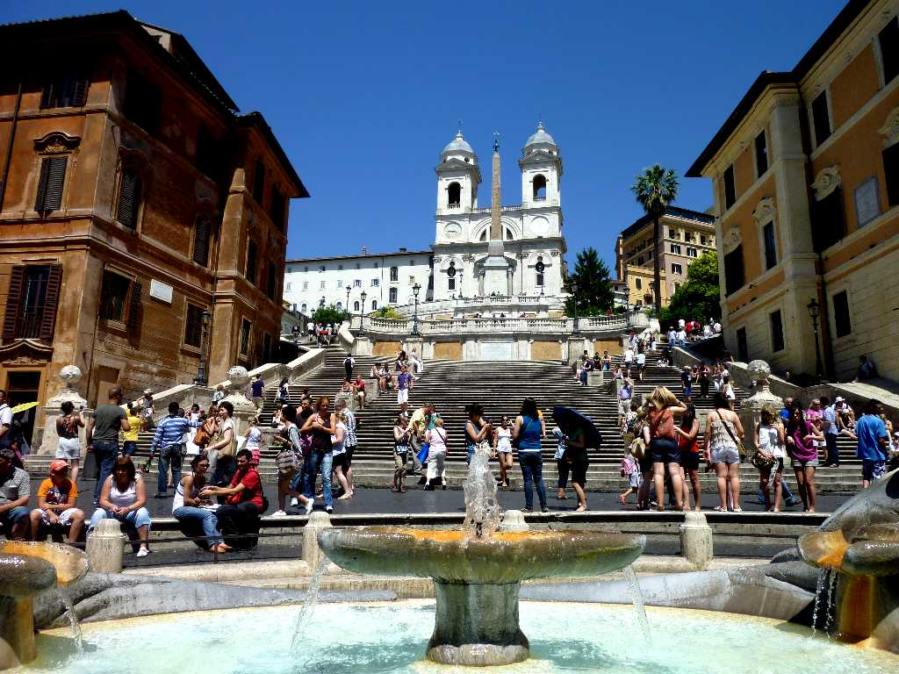
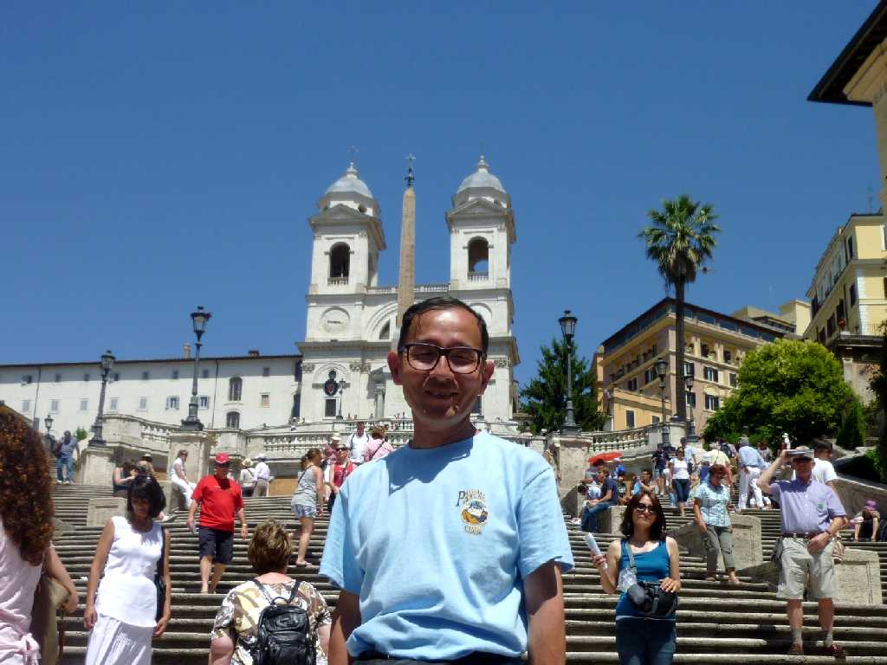
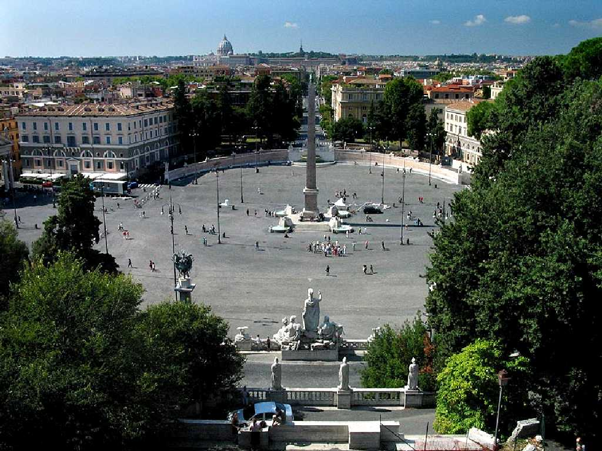
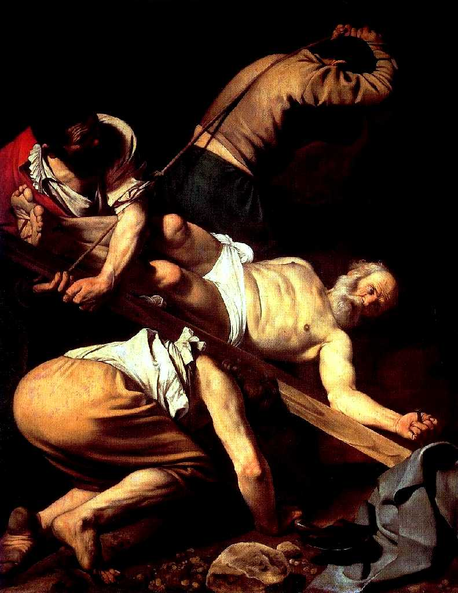

Fontana della Barcaccia Trinità dei Monti Piazza di Spagna Roma
スペイン大使館の近くにある広場から名付けられたスペイン広場 舟の噴水 大階段 トリニタデイモンティ教会

June 23 2011 Piazza di Spagna

Piazza del Popolo
ポポロ広場はローマへの入口の広場で巡礼者はここでサンピエトロ寺院を初めて見ることになる ポポロは市民を意味する交通の要所でローマ市街に道が放射状にのびている

Caravaggio Crucifixion of Saint Peter Santa Maria del Popolo
サンタマリアデルポポロ教会チェラージ礼拝堂 カラヴァッジョ作 聖ペテロの磔刑